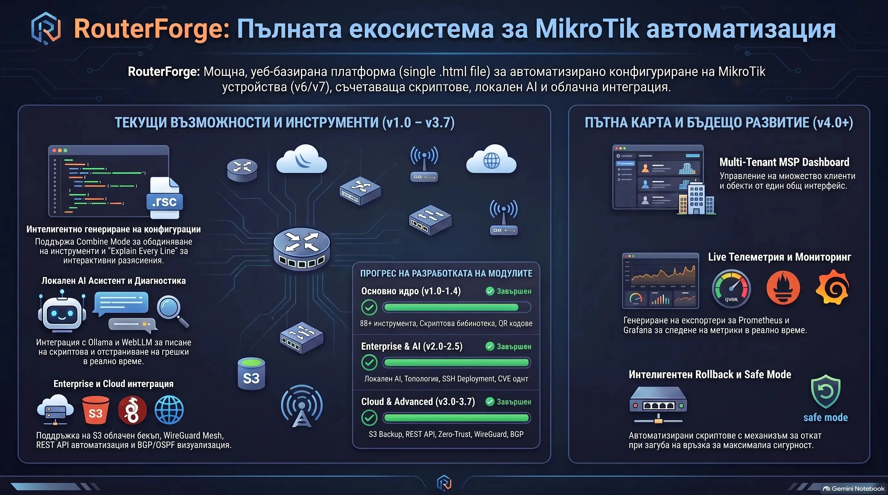

Business Continuity
Backup и Disaster Recovery
Възстановете критичните данни и услуги с 3-2-1 стратегия, защитени копия и реално проверен план за действие.

Възстановяване по план
Backup, който може да бъде използван
Не е достатъчно да има копия. Трябва да знаете кои данни са критични, колко време може да продължи прекъсването и дали възстановяването работи в реални условия.
- Стратегия 3-2-1Копия на различни носители с изолирана защита.
- RTO и RPOЦели, съобразени с критичността на процесите.
- Immutable и offsite копияДопълнителна защита срещу ransomware и отказ.
- Тестове за възстановяванеПрактическа проверка на данни, системи и процедури.
Планирана устойчивост
Подготовка за отказ, грешка и атака
Свързваме backup с incident response, ransomware превенция и NIS2/DORA изискванията за устойчивост. Документираме отговорностите и стъпките за възстановяване.
Често задавани въпроси
Backup и DR
Какво означават RTO и RPO?
RTO е целевото време за възстановяване, а RPO е допустимата загуба на данни, измерена във времето.
Тествате ли възстановяването?
Да. Проверяваме дали копията са налични, непроменени и могат да бъдат възстановени в рамките на договорените цели.
Обхват, срокове и оферта
Как се формират обхватът и офертата за backup и DR
Всеки ангажимент се договорира писмено след кратка оценка на средата. Етапите, отговорностите и правата за действие се описват в предложението, а сроковете за реакция и нивата на обслужване (SLA) се договарят индивидуално според критичните ви активи и приоритети.
- Обем и критичност на даннитеКои системи и данни са жизненоважни за операциите.
- Целеви RTO и RPOДопустимо време за прекъсване и загуба на данни за всеки процес.
- Брой сървъри, натоварвания и локацииКолко обекти влизат в политиката за копие.
- Честота на тестовете за възстановяванеКолко често проверяваме реалното връщане на данни.
Офертата се формира след оценка на тези фактори — заявете консултация или минете през NIS2/DORA самооценката.